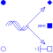

SpacePhasorPhysical transformation: three-phase <-> space phasors |

|
Information
This information is part of the Modelica Standard Library maintained by the Modelica Association.
Physical transformation of voltages and currents: three-phases <-> space phasors:x[k] = X0 + {cos(-(k - 1)/m*2*pi),-sin(-(k - 1)/m*2*pi)}*X[Re,Im]
and vice versa:
X0 = sum(x[k])/m
X[Re,Im] = sum(2/m*{cos((k - 1)/m*2*pi),sin((k - 1)/m*2*pi)}*x[k])
were x designates three-phase values, X[Re,Im] designates the space phasor and X0 designates the zero sequence system.
Physical transformation means that both voltages and currents are transformed in both directions.
Zero-sequence voltage and current are present at pin zero. An additional zero-sequence impedance could be connected between pin zero and pin ground.
Parameters (1)
| turnsRatio |
Value: 1 Type: Real Description: Turns ratio |
|---|
Connectors (5)
| plug_p |
Type: PositivePlug |
|
|---|---|---|
| plug_n |
Type: NegativePlug |
|
| zero |
Type: PositivePin |
|
| ground |
Type: NegativePin |
|
| spacePhasor |
Type: SpacePhasor |
Used in Components (2)
|
Modelica.Electrical.Machines.BasicMachines.InductionMachines Induction machine with slipring rotor |
|
|
Modelica.Electrical.Machines.Interfaces Partial model for induction machine |